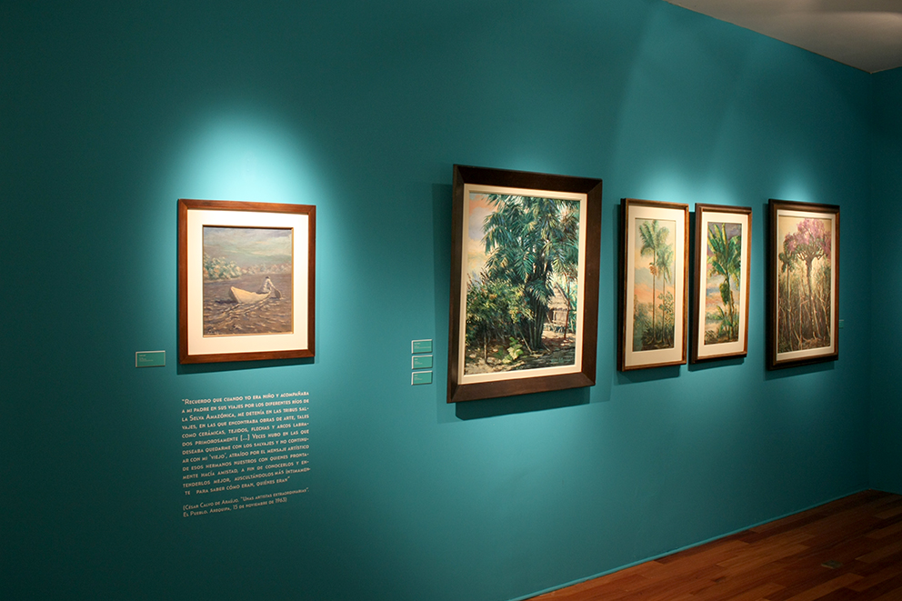
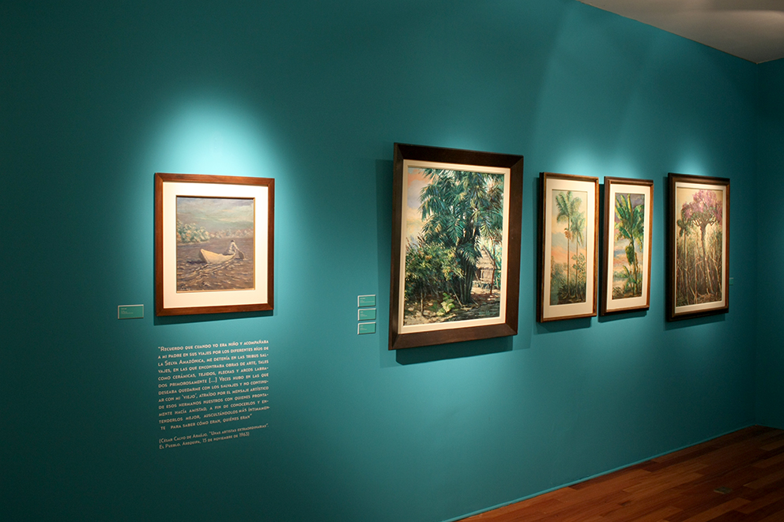

Calvo de Araujo: La selva misma
Curaduría: Christian Bendayán
Año: 2015
Lugar: Galería John Harriman, CC. Británico. Lima, Perú
 

La historia de la Amazonía peruana se ha escrito a partir de una serie de mitos superpuestos, violentamente, sobre las narrativas que ya existían en este territorio antes de las primeras expediciones de conquista e investigación científica europeas. Su memoria se ha propuesto sobre la base del desinterés, de la imposibilidad de generar diálogos, del desconocimiento del contexto y la incapacidad de reconocer la diferencia, llenando de sentido y significado ajeno todo lo que no era posible entender, situación que se repite aún hoy en día. En la Amazonía no hay amazonas, pero estas figuras mitológicas ―la configuración del territorio como femenino― han sido desde el inicio de los viajes de conquista la justificación para tomar posesión de la tierra, depredar sus recursos y sustentarlo todo a partir de visiones de desarrollo. En la región amazónica no hay “perros del hortelano”, pero esta categoría ha servido para desprestigiar posturas sólidas y legítimas de protección y defensa del territorio y su naturaleza ―aun cuando estas parecen ya no formar parte de la agenda del Estado― y simplificar una serie de conflictos sociales y políticos aun sin conclusión.
Esta exposición reúne obras de artistas peruanos y extranjeros que construyen narrativas alternativas a las de la historia oficial del Perú. Artífices que están creando propuestas sobre hechos cruciales de la historia de la Amazonía y sobre cómo estos han sido contados. El objetivo es resaltar la relevancia del vacío discursivo sobre la región amazónica, proponer actualizaciones de las visiones de conquista y descubrimiento, de la época del caucho y su guerra de imágenes y de los conflictos contemporáneos, para recuperar así ciertos hechos y volverlos a contar desde las voces de los que no han sido representados y desde las historias que han sido silenciadas.
Artistas: Christian Bendayán, Enrique Casanto, Yuri Castañeda, Jota Castro, Raimond Chaves y Gilda Mantilla, Dare Dovidjenko, Julio Guerrero, Thomas Hobbs, La Pleve, La Restinga, Nancy La Rosa, Lu.Cu.Ma., Julio Maldonado “Rawa”, Alfredo Márquez, Hervé Miloux, Cármen Reátegui, Segundo Candiño Reátegui, Brus Rubio, Olinda Silvano “Reshinjabe Inuma”, Elena Valera "Bawan Jisbe", Adán Vallecillo, Rember YahuarcanI, Santiago Yahuarcani, Moico Yaker